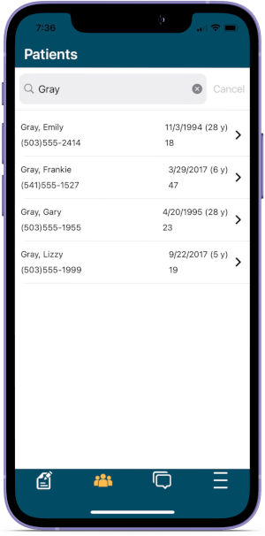
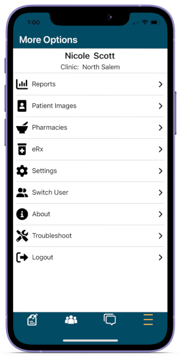

Use the ODMobile application to create and manage appointments, view patients, send text messages, and more.
In ODMobile, tap the Appts tab.

The Appointments Tab opens by default when the app is opened. It displays the Appointments Module.
Manage the daily schedule by viewing, creating, and editing appointments. The operatories and information that displays can be customized.
With the Patients tab, you can search patients and view basic patient information from the mobile device.
In ODMobile, tap the Patients tab.
Select a patient from the results to view patient information, appointments, allergies, and prescriptions.

You can email, call, or send the patient a Text Message once they have been selected. You can also send a prescription using the DoseSpot eRx Feature.
You can use the Messages tab to communicate with patients via text message using Integrated Texting.

You can also choose to show notifications on the mobile device when a new message is received.
In ODMobile, tap More Options.
Use the Menu tab to view some Reports, patient Images, pharmacies, and use the DoseSpot eRx Feature.